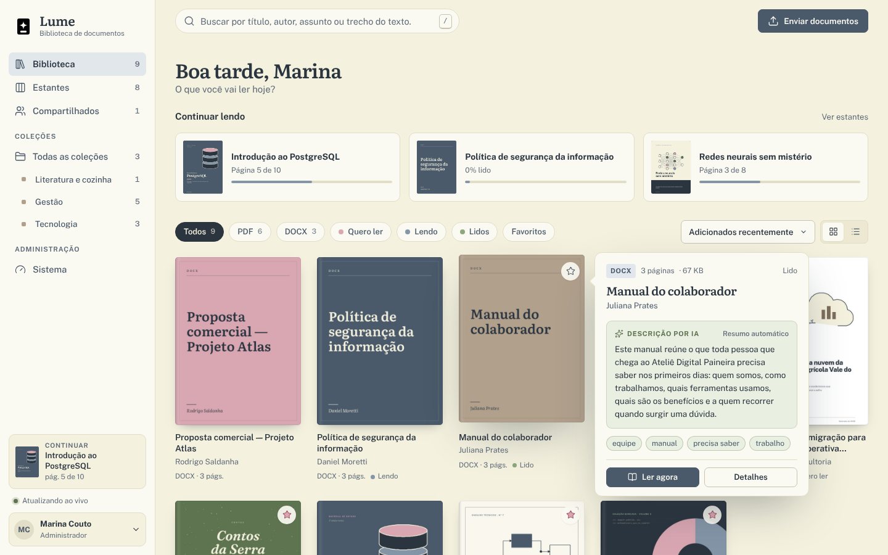
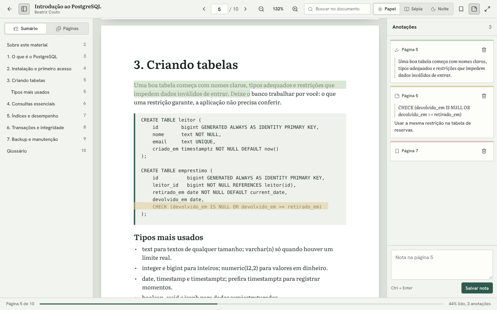
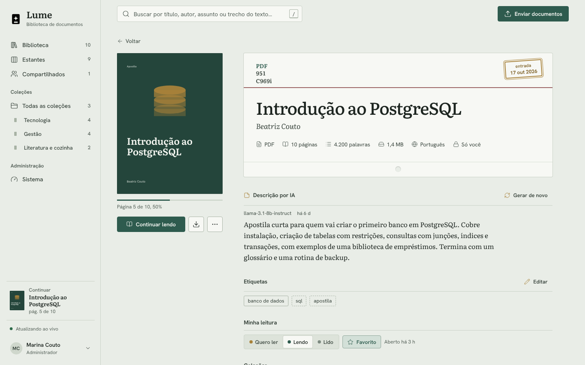
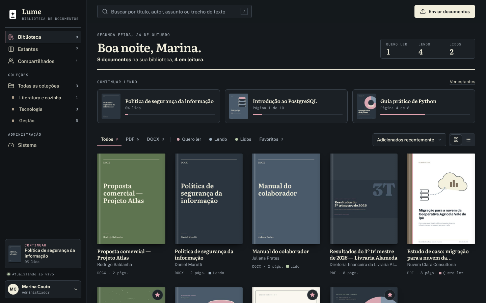
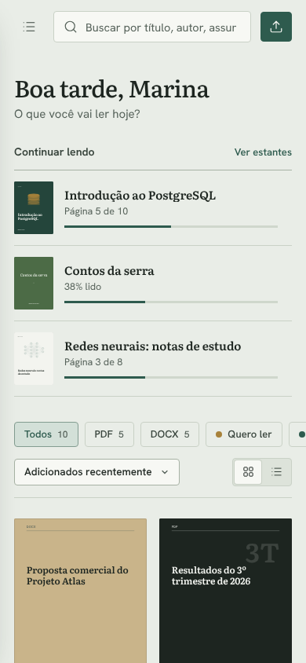
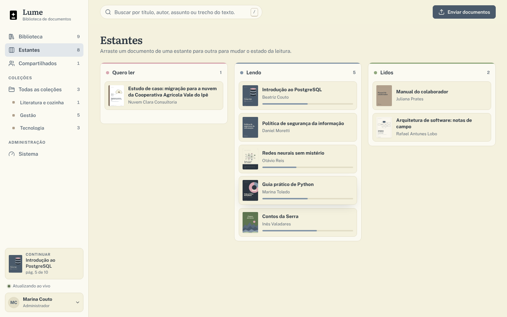
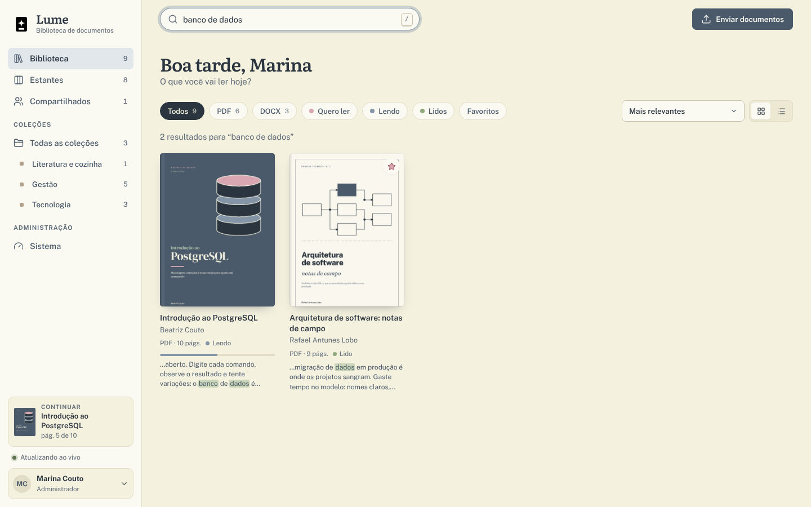
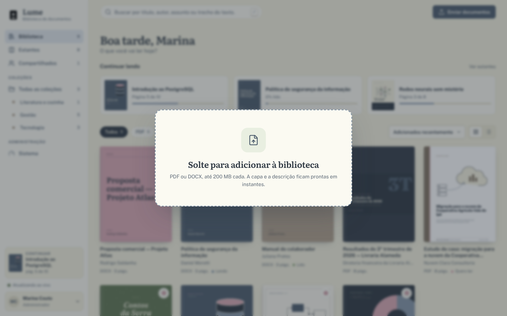
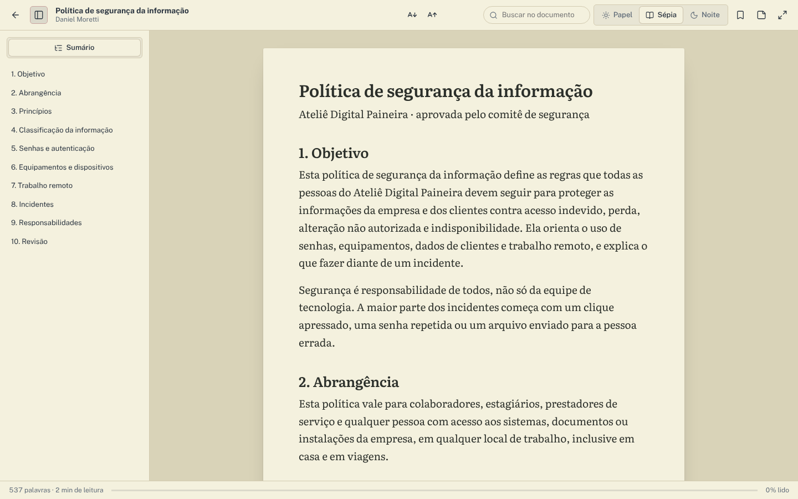
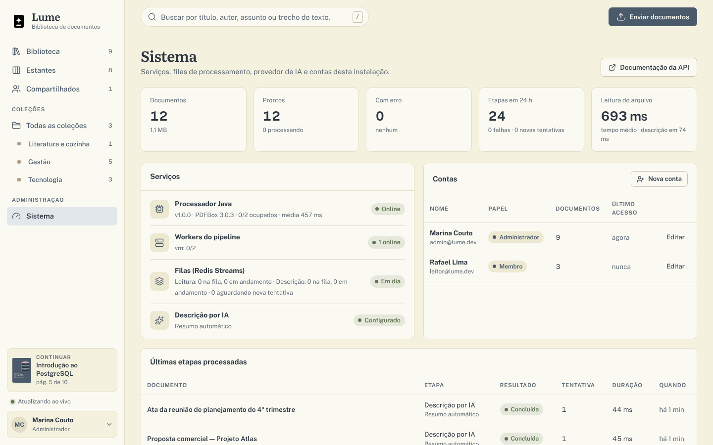

O Lume é uma biblioteca web auto-hospedada para PDF e DOCX. Você solta os arquivos; ele gera as capas, extrai texto e sumário, escreve uma descrição com IA e abre tudo num leitor próprio que lembra onde você parou.

Apostilas, manuais, relatórios e atas vivem em pastas, e-mails e aplicativos diferentes — sem capa, sem resumo e sem lembrar onde a leitura parou.
final_v3.pdf, sem pista do conteúdo.Reunir manuais, políticas, contratos e atas num lugar pesquisável, com contas, papéis e compartilhamento.
Quero ler, lendo e lidos, com progresso, destaques em quatro cores e modo foco — no próprio computador ou servidor.
Uma aplicação Django com processamento assíncrono, serviço Java e tempo real, toda documentada e testada.
| Recurso | Como funciona |
|---|---|
| Capas | A página 1 do PDF vira capa (se estiver em branco, tenta a próxima). DOCX ganha uma capa tipográfica na paleta do projeto. |
| Descrição por IA | Sem chave, um resumo extrativo local. Com chave, Claude, OpenAI, Ollama ou qualquer API compatível. Se o provedor falhar, o local assume. |
| Leitor | PDF com pdf.js (zoom, miniaturas, sumário, busca, temas papel, sépia e noite) e DOCX convertido em HTML de leitura. |
| Organização | Estantes com arrastar e soltar, coleções com ordem própria, favoritos e etiquetas. |
| Tempo real | Capas, descrições, contadores e estantes se atualizam em todas as abas abertas. |
| Operação | Painel Sistema com filas, workers, processador e IA; tokens pessoais para a API REST. |
O centro do Lume é o leitor. Tudo o que vem antes — capa, texto, sumário, descrição — existe para que abrir um documento seja rápido e voltar a ele seja natural.


A aplicação web responde rápido e nunca lê o arquivo ela mesma: o trabalho pesado vai para uma fila, é feito por workers e por um processador Java isolado, e o resultado volta ao navegador por WebSocket.
| Serviço | Tecnologia | Responsabilidade |
|---|---|---|
| web | Django 5.2, DRF, Channels, Uvicorn | Páginas, API REST, WebSocket, sessões, permissões e entrega dos arquivos com suporte a Range. |
| worker | Python | Consome as filas, chama o processador, grava metadados e texto, escreve a descrição e refaz o índice de busca. |
| processor | Java 21, PDFBox 3, StAX | Lê PDF e DOCX: páginas, palavras, sumário, metadados, texto, capa e HTML de leitura. Não acessa banco nem Redis. |
| postgres | PostgreSQL 16 | Documentos, leitura, anotações, coleções, contas e histórico do processamento. |
| redis | Redis 7 | Filas, retentativas, eventos em tempo real, cache e sessões. |
Cada escolha abaixo responde a um problema concreto que apareceu ao transformar "subir um PDF" em algo confiável com vários usuários, vários workers e arquivos imprevisíveis.
PDF e DOCX reais vêm quebrados, enormes ou com senha. Isolar a leitura num serviço Java com PDFBox, que só recebe um caminho e devolve JSON, impede que um arquivo ruim derrube a aplicação web.
EfeitoO processador escala sozinho e um PathGuard restringe a leitura à pasta de dados.
Uma fila simples perde a tarefa se o worker cair no meio. Com Streams, cada mensagem fica pendente até ser confirmada, e uma varredura recoloca na fila o que ficou para trás — inclusive se o Redis for apagado.
Efeitodocker compose up --scale worker=3 funciona sem mudar uma linha.
SELECT … FOR UPDATE SKIP LOCKEDMensagens repetidas são normais em filas distribuídas. Antes de trabalhar, o worker trava a linha do documento; se outro já a pegou, ele segue em frente.
EfeitoNenhum documento é processado duas vezes, mesmo com entrega duplicada.
Falhas passageiras voltam para a fila em 5 s, 15 s, 45 s… Arquivos que nunca vão abrir (com senha, corrompidos, .doc antigo) param em "Falhou" com o motivo em português.
EfeitoA pessoa sabe o que fazer; o painel Sistema mostra o histórico de cada etapa.
A extensão não basta: o web confere os bytes do arquivo e calcula o SHA-256 para não guardar o mesmo documento duas vezes. O HTML gerado a partir do DOCX é higienizado com nh3 antes de chegar ao navegador.
EfeitoMenos disco, e nenhum script embutido num DOCX chega ao leitor.
Exigir chave de API afastaria quem só quer testar. O padrão é um resumo extrativo feito no próprio worker; Claude, OpenAI ou Ollama entram por variável de ambiente, recebendo só título, autor, sumário e um trecho limitado do texto.
EfeitoFunciona offline e envia o mínimo de dados ao provedor.
SearchVector e SearchRank para o texto completo, unaccent para ignorar acentos e TrigramSimilarity para tolerar erros de digitação no título.
EfeitoBusca relevante sem Elasticsearch para manter.
Para um projeto auto-hospedado, cada ferramenta a mais é um ponto de quebra. A interface é JavaScript puro em módulos, com CSS em tokens e fontes auto-hospedadas.
EfeitoNenhuma chamada a serviços externos e nada para compilar antes de rodar.
A identidade vem das bibliotecas: papel creme, tinta escura, etiquetas coloridas e metadados em letra de máquina. Cada cor tem um papel, e o Rosé tinta é a assinatura.
Serifa feita para leitura longa em tela.
Neutra e legível em tamanhos pequenos.
Contadores e rótulos, como numa ficha.


Link "Pular para o conteúdo", anel de foco visível em todos os controles, rótulos ARIA nas ações só com ícone, contraste AA nos dois temas, animações desligadas com prefers-reduced-motion e atalhos de teclado na biblioteca e no leitor (/ busca, U envio, F modo foco).
Além da biblioteca e do leitor, o Lume tem estantes, busca, envio com progresso ao vivo e um painel para quem administra a instalação.





Os testes usam PostgreSQL e Redis de verdade, e uma parte deles passa pelo processador Java com arquivos reais. Nada é simulado onde o erro costuma morar.
API, envio, permissões, busca, pipeline, IA, tempo real e painel Sistema. Os de ponta a ponta usam PDF com marcadores, DOCX com títulos e um arquivo corrompido.
A cada push: compila o processador com Maven, roda todos os testes e constrói as imagens Docker.
iniciar.cmd ou iniciar.sh criam o .env com senhas aleatórias, sobem os cinco contêineres e abrem o navegador.
Manual técnico, Banco de Dados e esta apresentação, gerados a partir de HTML e CSS em docs/fonte a cada versão.
| Camada | Tecnologia | Uso |
|---|---|---|
| Back-end | Python 3.13 · Django 5.2 | DRF para a API, Channels para WebSocket, Uvicorn como servidor ASGI |
| Processamento | Java 21 · PDFBox 3 · StAX | Texto, sumário, metadados, capas e HTML de leitura |
| Front-end | JavaScript (módulos ES) · pdf.js 5 | Biblioteca, leitor, estantes, coleções, sistema e conta |
| Dados | PostgreSQL 16 · Redis 7 | Fonte da verdade, busca em texto completo, filas e eventos |
| Infraestrutura | Docker Compose · GitHub Actions | Cinco serviços, perfil opcional com Ollama, CI a cada push |
| Qualidade | Pytest · WeasyPrint | Testes com serviços reais; documentação em PDF |
O Lume nasceu da vontade de ter um lugar único para organizar, ler e anotar documentos, sem depender de vários aplicativos diferentes.
prefers-reduced-motion.O Lume para Windows (havelroot/Document-Library-Desktop) leva a mesma biblioteca para um único Lume.exe, sem Docker nem servidor: Electron, SQLite com FTS5, leitura dos arquivos em JavaScript e chaves de IA guardadas no cofre de credenciais do Windows.
Repositório oficial em Violet-pixel/Document-Library-Platform.
Parceiro de projetos e de vida (@ravelroot), das decisões de arquitetura ao design do leitor.
Sugestões, issues e pull requests são bem-vindos. Para instalar e operar, veja o Manual técnico; para o modelo de dados, o documento Banco de Dados.
Composto em Literata, Public Sans e IBM Plex Mono (SIL Open Font License 1.1). Gerado com WeasyPrint a partir de docs/fonte/apresentacao.html. Lume é distribuído sob a licença MIT · Copyright © 2026 Clara A. Portes.